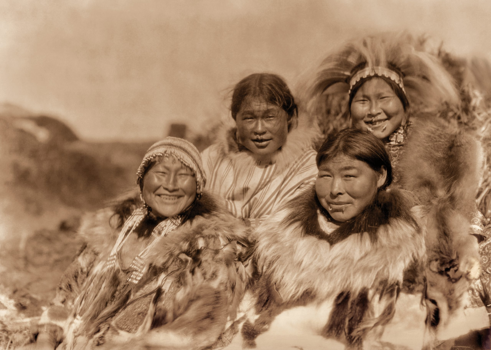
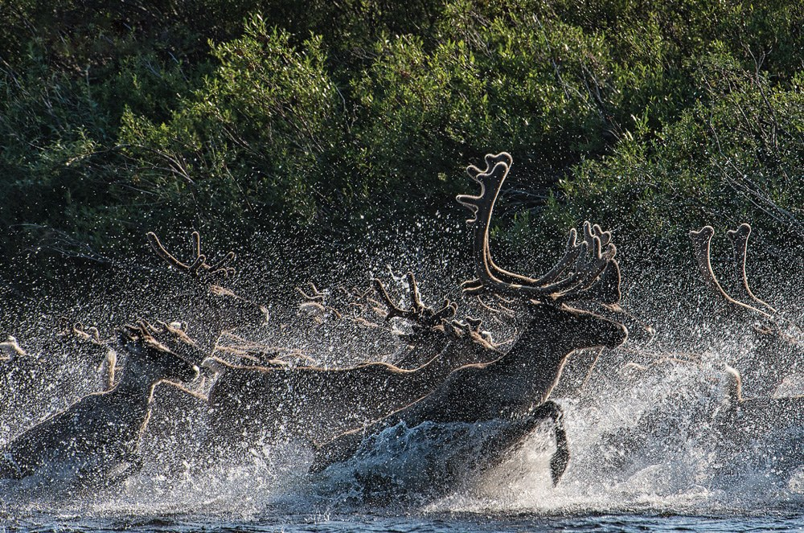
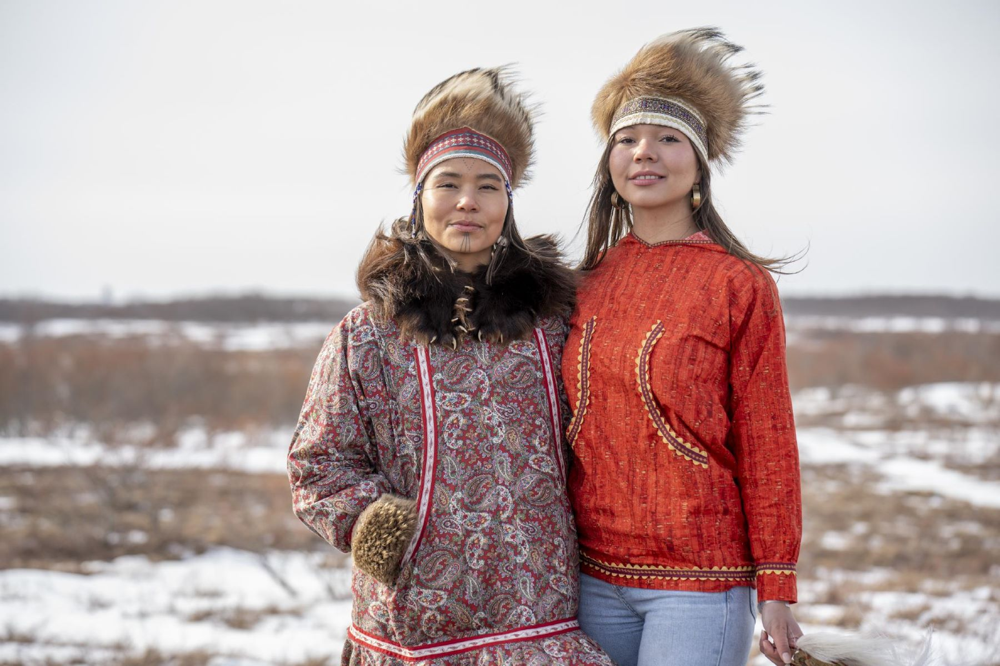

A survey of the complex dynamics between Alaska's Indigenous Communities and Oil Corporations.
Intro
Aerial image captured by drone (Weisbrod).
Welcome to my ESPM 50AC Final Project, an interactive exploration of the interactions between Alaska's Indigenous communities and the oil companies operating on their lands. As oil drilling continues to be a driving force of the economy in Alaska, its impact on the environment and culture of Indigidenous populations cannot be understated.
Through various sections on the site, you can navigate the environmental damage and cultural disruptions that have arisen from oil exploration. Additionally, a detailed timeline will provide help contextualize past and ongoing impact of oil exploration in Alaska. Finally, testimonies from Indigenous individuals directly affected by oil drilling will offer a more personal perspective on these issues.
My goal is to increase awareness of the strong correlation between natural resource exploitation and the negative impact it has on Indigenous communities, both in Alaska and in general. Through a multimedia format, I hope to engage the audience and provide a better understanding of the need for responsible and respectful resource management practices.
To navigate the website, click away from this page and access any of the sections by clicking on their respective buttons on the homepage.
Environmental Impacts
The Arctic National Wildlife Refuge (Yale Program on Climate Change Communication).
General Impacts
Oil exploration in Alaska has profound and far-reaching effects on the local ecosystems, which are among the most pristine and sensitive in the world. The operations involved in oil extraction include the construction of roads, pipelines, and drilling sites. They not only disrupt the natural landscape but also lead to significant habitat destruction and fragmentation. This destruction has serious implications for wildlife, particularly for species that depend on large, undisturbed areas for migration and breeding (Alaska Department of Fish and Game).
The Arctic National Wildlife Refuge (ANWR), a vital habitat for polar bears, caribou, and migratory birds in Alaska, has been one of the most affected areas. Research shows that the noise and physical disturbances from drilling activities can alter the behaviors and migration patterns of these animals, which may lead to reductions in population sizes (Kok et al.). Additionally, the risk of oil spills is a constant threat; such spills can have devastating and long-lasting effects on water quality and aquatic life. The famous 1989 Exxon Valdez oil spill, although not a direct result of drilling, is an example of the catastrophic long-term environmental damages that spills can inflict on ecosystems (Damage Assessment, Remediation, and Restoration Program).
Impact on Indigenous Populations
The environmental damages resulting from oil exploration in Alaska have had significant and direct impacts on the Indigenous populations who inhabit these regions. Among these communities, the Gwich’in and the Iñupiat especially stand out due to their strong connection to the land and their reliance on natural resources for food, cultural practices, and economic survival.
The Gwich’in Nation
A picture of the Gwich'in people (Himrod).
The Gwich’in people, often referred to as the "Caribou People," are deeply connected to the Porcupine caribou herd, which migrates across the Arctic National Wildlife Refuge (ANWR). The Gwich’in's sustenance and cultural practices revolve around the caribou, which they rely on for food, clothing, and tools. Oil drilling in the ANWR threatens the caribou’s migration patterns and breeding grounds due to noise and human activity. Changes in the caribou population or migration routes can drastically affect the Gwich’in way of life, leading to food insecurity and loss of cultural practices (Raeann).
The Iñupiat Community
A picture of the Iñupiat people (Travel Alaska).
The Iñupiat people reside primarily along the North Slope of Alaska and have a culture that is closely tied to whaling and the Arctic marine environment. Oil exploration and the associated risk of spills pose a significant threat to marine life, including bowhead whales, which are central to Iñupiat cultural identity. For the Iñupiat, a disaster like the Deepwater Horizon Spill could irreversibly harm their whaling culture and disrupt their food supply chain (Matthiessen).
Conclusion
The environmental costs of oil exploration in Alaska are considerable. The challenge lies in balancing the economic benefits derived from oil exploration with the need to preserve Alaska's unique ecosystems and the cultural heritage of its Indigenous populations. The ongoing debate and research into sustainable development strategies are crucial for ensuring that economic growth does not come at the expense of environmental degradation and cultural loss. Policymakers, businesses, and communities must work together to develop approaches that respect and protect the natural landscapes of Alaska. Ensuring that future generations can inherit a healthy environment requires a comprehensive approach to natural resource management.
Cultural Impact

Four Indigenous women of Nunavik Island (Ikenberg).
General Impacts
Oil exploration in Alaska has significantly influenced the cultural practices of the indigenous communities that have inhabited these lands for thousands of years (Alaska Federation of Natives). The intrusion of oil companies has not only disrupted the natural environment but has also posed substantial challenges to the cultural traditions of these communities, particularly the Gwich’in and the Yupik.
Gwich'in

Caribou (Alaska Magazine).
For the Gwich’in, the caribou holds profound cultural and spiritual significance, laying a part of the foundation for their identity, subsistence, and way of life. The migration routes and breeding grounds of the Porcupine caribou, essential to Gwich’in cultural rituals and food security, are threatened by the physical and noise pollution from drilling operations. Research shows that these disturbances can lead to changes in the routes the caribou take during their migrations, often pushing them away from traditional Gwich’in hunting grounds (Alaska Dept. of Fish & Game).
This shift not only challenges the Gwich’in’s ability to sustain themselves but also has profound implications for their cultural practices. As the accessibility of caribou declines, so too does the opportunity for younger generations to engage in traditional hunting practices, a key component of cultural education and identity formation within the community. The reduction in these cultural interactions risks a loss of cultural heritage, as traditional knowledge and rituals that have been passed down for generations become harder to preserve. Moreover, the spiritual aspects of Gwich’in life are deeply tied to the presence and health of the caribou herds. Many Gwich’in view the caribou as a gift from the Creator, and their stewardship of this animal is a sacred duty (Oil in the Sea III). The disruption caused by oil drilling thus not only affects their physical sustenance but also strikes at the heart of their spiritual beliefs and practices.
Yupik

A picture of the Yupik people (Travel Alaska).
The Yupik communities of southwestern Alaska are strongly related with the rivers and coastal areas that serve as sources of salmon and other fish. These water bodies are crucial not only for their subsistence but also as a foundation of their cultural and ceremonial life. Fishing is not just an activity for sustenance; it holds ceremonial value, features in social gatherings, and is a skill passed down through generations. The seasonal cycles of fishing provide the community with structure. The entire community often involved in the harvesting, processing, and sharing of the catch, reinforcing social bonds (Ayunerak).
However, the activities of oil exploration and the associated environmental hazards pose a significant threat to the Yupik's practices. Oil spills, runoff from extraction sites, and increased industrial activity can lead to significant contamination of water bodies, severely affecting fish populations in terms of both size and health (Ayunerak). Such ecological disturbances not only jeopardize the food security of the Yupik people but also erode the cultural framework of their community. As fish populations dwindle or become contaminated, the knowledge and cultural practices related to fishing—such as the traditional methods of catching, preparing, and preserving fish—face the danger of disappearing. Moreover, the spiritual and community activities centered around fishing are disrupted, leading to a loss of identity among the younger members of the community, who may find these traditions harder to sustain in their original form (Luu).
Conclusion
The encroachment of oil exploration activities in Alaska has not only ecological and economic consequences but profound cultural implications for Indigenous peoples. The preservation of these cultures requires careful consideration of their traditional lands and lifestyles, which are increasingly endangered by external economic interests and environmental degradation. Addressing these issues means recognizing and respecting the ties these communities have to their environments.
Timeline
Citations for images and information in this timeline can be found in the Citations tab.
Testimonies
1. This is a testimony from a Gwich'in leader against gas and oil development in the Arctic Refuge. The Gwich'in people have been protesting against development in the Arctic Refuge for decades now, and continue this work today.
2. This video is a full length testimony by Alaskan natives in front of Congress. Once again, they are trying to stop oil drilling in the Arctic Refuge. Although this area is home to many different flora and fauna, several major oil sources have been discovered in the area. Alaskan natives are working to preserve the natural environment here. Although this video is 3 hours long, I do recommend watching it when you get a chance, it was really informative and opened my eyes to the explotative nature of oil companies operating in Alaska.
3. This is a great video I came across discussing how oil companies acting in Alaska can come to impact people living in the continental United States and even across the globe. This video also features members of the Gwich'in Steering Committee, which has been extremely vocal in fighting to protect the Arctic National Wildlife Refuge.
Works Cited
I choose to embed my citations as a google doc, broken down by section. Please view the document below to see my sources for this project. The embedded document is hard to read, so you can also access the document here.